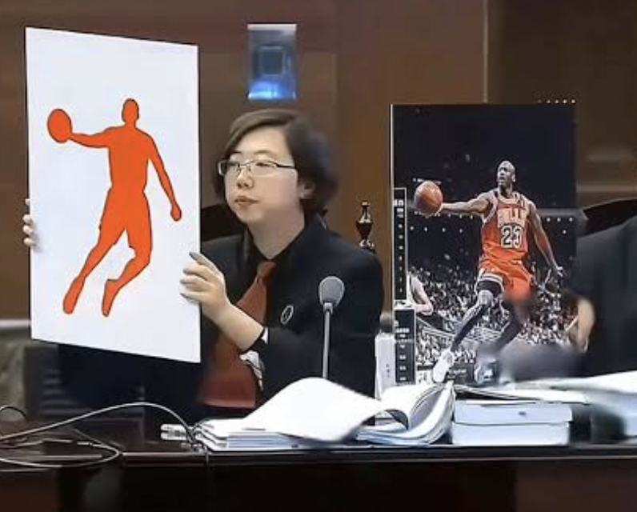
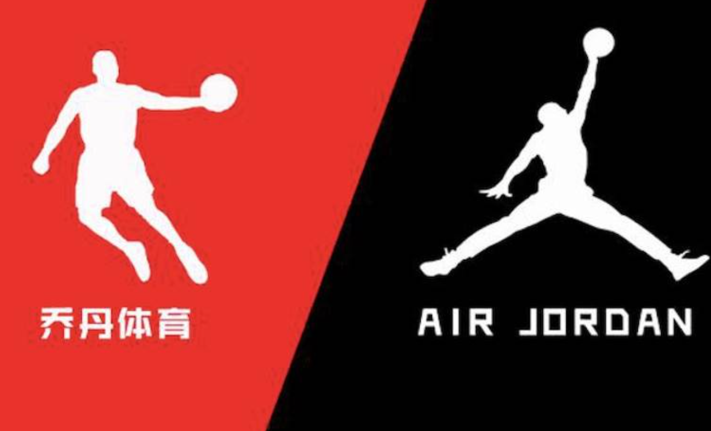

乔丹案:
一个姓名
的边界
课程作业 · 案例分析
迈克尔·乔丹诉乔丹体育 · 2026年11月
14年
2007—2021
第31条
商标法·在先权利
两条线
行政 + 民事
2020.04
最高法再审
35万
赔偿 30万 + 5万
案情
程序
要件分析
经济法视角
责任赔偿
总结答辩
乔丹案 · 课程作业
2
Overview
案情概览
当事人
原告迈克尔·乔丹,前NBA球员,在中国以“乔丹”广为人知。被告乔丹体育,国内运动品牌,持有大量含“乔丹”的商标。
乔丹
vs 乔丹体育
争议
乔丹体育把“乔丹”注册为商标和企业字号,还用了23号和乔丹之子名字的译名。乔丹认为这侵害了他的姓名权,并让公众误以为两者有关联。
姓名权
与商标
结果
行政线:2020年4月最高法再审,乔丹胜诉。民事线:判决停止使用、公开道歉,赔偿30万元,另付合理开支5万元。
35万元
案情
程序
要件分析
经济法视角
责任赔偿
总结答辩
乔丹案 · 课程作业
3
Timeline
十四年的时间线
2007
4月 申请
乔丹体育申请“乔丹+球员剪影”商标,第25类服装鞋帽。
2010
4月 核准
该商标获准注册。乔丹体育名下共有约200件相关商标。
2012
10月 请求撤销
乔丹向商评委请求撤销,被驳回。行政诉讼一审、二审也败诉。
2016
12月 最高法裁定
最高法推翻此前判决,支持乔丹,乔丹体育须停止使用“乔丹”字样。
2020
4月 最高法再审
涉案商标损害乔丹在先姓名权,违反商标法第31条,发回重新裁定。
2021
1月 民事判决
赔偿30万元,合理开支5万元,停止使用并公开道歉。
案情
程序
要件分析
经济法视角
责任赔偿
总结答辩
乔丹案 · 课程作业
4
Procedure
行政与民事两条线
商评委裁定,驳回
→
中级法院一审,败诉
→
高级法院二审,败诉
→
最高法再审,胜诉
乔丹起诉乔丹体育
→
法院审理是否侵权
→
判令停止使用、道歉
→
赔偿35万元
争的是什么
行政线
商标该不该被注册
民事线
乔丹体育是否侵权
对方是谁
行政线
商标行政机关,乔丹体育是第三人
民事线
乔丹体育本身
能拿到什么
行政线
撤销或重新裁定商标,没有赔偿
民事线
停止侵害、赔礼道歉、赔偿
案情
程序
要件分析
经济法视角
责任赔偿
总结答辩
乔丹案 · 课程作业
5
程序讲完了。
中乔到底
侵了什么?

庭审现场:法庭上出示乔丹体育的球员剪影标志,旁边是乔丹穿23号球衣的照片。图片来源:网络
接下来
加害行为与过错
损害与因果链
混淆与搭便车
判决与赔偿
案情
程序
要件分析
经济法视角
责任赔偿
总结答辩
乔丹案 · 课程作业
6
Elements
加害行为与过错
加害行为
① 把“乔丹”注册为商标,并作为企业字号使用。
② 在商标里用23号、乔丹之子名字的中文译名。
③ 批量申请,形成约200件相关商标。
过错
① 明知乔丹在中国长期广泛知名,仍以“乔丹”申请注册。
② 法院认定其有使公众误认的明显意图。
③ “乔丹只是西方常见姓氏”的抗辩没有被采纳。

左:乔丹体育的球员剪影标志。右:Air Jordan(飞人)标志。两个标志都是球员剪影加篮球,构图相近。
图片来源:网络
案情
程序
要件分析
经济法视角
责任赔偿
总结答辩
乔丹案 · 课程作业
7
Elements
损害与因果链
行为
注册、使用“乔丹”
→
误认
公众以为有代言、授权
→
损害
乔丹对姓名的控制被侵占
→
后果
乔丹体育借名气获利
损害是什么
姓名权人原本有权决定谁能使用自己的姓名、怎么使用。注册成商标后,这项控制被架空,乔丹的名气被拿去替另一家企业的商品背书。据美国《体育画报》报道,乔丹体育曾开出约6000家门店。
因果怎么连
名气是起点,误认是中间环节。没有“乔丹”这个名字,公众不会把乔丹体育的商品和乔丹联系起来。
乔丹体育门店:招牌是“乔丹体育”和球员剪影,看上去像乔丹的品牌。
图片来源:网络
案情
程序
要件分析
经济法视角
责任赔偿
总结答辩
乔丹案 · 课程作业
8
Economic law
混淆与搭便车
混淆
消费者看到“乔丹”,以为商品出自乔丹或经他授权。
市场上的信号被扰乱,消费者的选择建立在错误信息上。
搭便车
乔丹体育没有付出相应成本,就拿到了乔丹多年积累的知名度。
这笔商誉本该由乔丹自己决定怎么变现。
乔丹体育的跑鞋,鞋跟和鞋面都印着球员剪影。
图片来源:网络
放在经济法里看:
混淆伤害消费者,搭便车伤害竞争者,两者合在一起,就破坏了公平竞争的市场秩序。
案情
程序
要件分析
经济法视角
责任赔偿
总结答辩
乔丹案 · 课程作业
9
最高人民法院 · 判决意旨(据报道转述)
未经许可把他人的姓名注册为商标,容易让公众以为商品与他有代言、许可等联系。
依据:商标法第31条,申请商标注册不得损害他人现有的在先权利。
案情
程序
要件分析
经济法视角
责任赔偿
总结答辩
乔丹案 · 课程作业
10
Judgment
判决结果
01
停止使用“乔丹”
企业名称、商标均不得再用
02
公开道歉
声明与乔丹没有关联
03
旧商标
采取合理措施标明无关
04
赔偿
30万元,另付合理开支5万元
为什么旧商标没有被禁用?
商标注册超过五年,就不能再请求宣告无效。乔丹体育约有200件相关商标,不少已超过这个期限,法院只能要求其采取合理措施,避免公众误认。
赔偿合计:
30万元 + 5万元 = 35万元。30万元是精神损害性质的赔偿,5万元是为诉讼支出的合理开支。
案情
程序
要件分析
经济法视角
责任赔偿
总结答辩
乔丹案 · 课程作业
11
Compensation
落差从哪来
百亿级
35万
按长度对比,35万在百亿面前只剩一道细线,约为两万九千分之一。
原因一
原告没有主张经济损失赔偿,只请求精神损害赔偿和合理开支。
原因二
法院只在诉讼请求范围内判决,不会替原告多判。公开报道也提到,乔丹体育没有被判令交出所获利润。
原因三
超过五年的旧商标无法撤销,市场上的存量利益难以收回。
案情
程序
要件分析
经济法视角
责任赔偿
总结答辩
乔丹案 · 课程作业
12
Conclusion
三个结论
01
姓名权可以成为商标争议中的在先权利,未经许可注册他人姓名会被撤销。
02
行政线救的是商标,民事线救的是损害,两条线各管一段,不能互相代替。
03
赔偿多少,取决于原告怎么提诉讼请求,而不只看被告赚了多少。
案情
程序
要件分析
经济法视角
责任赔偿
总结答辩
乔丹案 · 课程作业
13
Q & A
答辩预案
Q1 为什么赔得这么少?
原告只请求精神损害赔偿和合理开支,没有主张经济损失。法院按诉求判,所以是30万加5万。
Q2 商标已注册,怎么还侵权?
注册不等于合法。商标法第31条规定,不得损害他人在先权利,姓名权就是在先权利。
Q3 肖像权为什么没被支持?
涉案图形只是黑色人形剪影,没有能识别到乔丹本人的个人特征,所以不构成肖像。
案情
程序
要件分析
经济法视角
责任赔偿
总结答辩
乔丹案 · 课程作业
14
谢谢,
请提问
案例
迈克尔·乔丹诉乔丹体育
来源
最高人民法院判决 · 公开新闻报道
汇报
小组成员 1–6 号